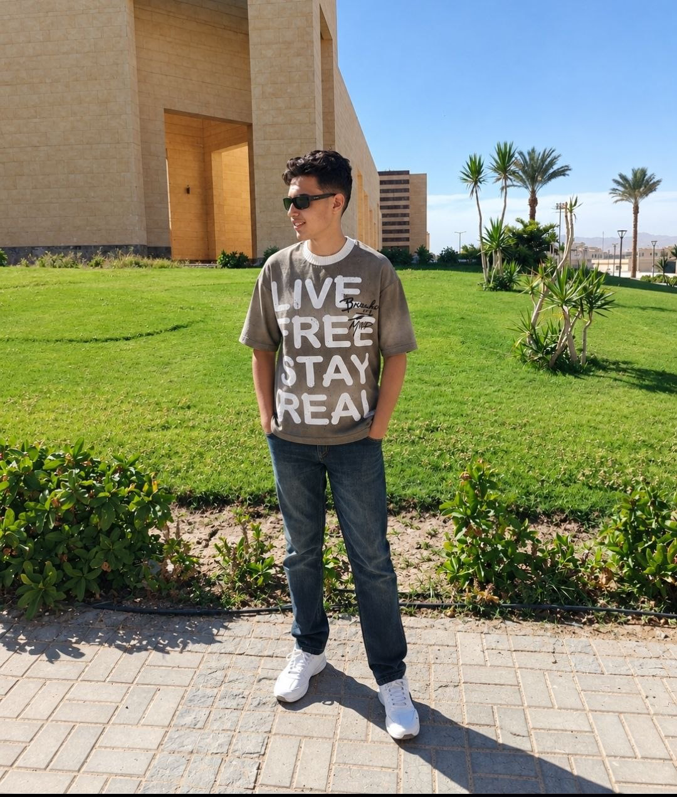

1 البنية التشريحية للمسار السمبثاوي (Anatomy of Sympathetic Pathway)
يبدأ مسار الجهاز السمبثاوي Sympathetic Nervous System من الحبل الشوكي في المنطقة الصدرية والقطنية (Thoracolumbar Outflow).
الخصائص في السمبثاوي: يكون قصير الطول (Short) لأن العقد السمبثاوية تقع بالقرب من العمود الفقري (Paravertebral chain). ينشأ جسمه من القرن الوحشي (Lateral horn) للنخاع الشوكي الصدري والقطني (T1 - L3).
محطة التقاء وتشابك (Synapse) بين العصبون قبل العقدة والعصبون بعد العقدة. يتم إفراز الأسيتيل كولين فيها ليرتبط بمستقبلات نيكوتينية.
الخصائص في السمبثاوي: يكون طويل الألياف (Long) ويمتد من العقدة وصولاً إلى الخلية الهدف أو العضو المستجيب (Target cell / Effector organ).
2 مقارنة مسارات الجهاز الذاتي (Sympathetic vs Parasympathetic Pathways)
توضح الشريحة 3 المقارنة الكلاسيكية الحاسمة بين المسار السمبثاوي والمسار الباراسمبثاوي من حيث النواقل العصبية والمستقبلات في العقد وفي الأعضاء المستهدفة:
| وجه المقارنة | المسار السمبثاوي (Sympathetic) | المسار الباراسمبثاوي (Parasympathetic) |
|---|---|---|
| الناقل في العقدة (Ganglia) | Acetylcholine (ACh) | Acetylcholine (ACh) |
| المستقبل في العقدة | Nicotinic Receptor (كولينيرجي) | Nicotinic Receptor (كولينيرجي) |
| الناقل عند العضو المستهدف | Noradrenaline (NE / Norepinephrine) *باستثناء الغدد العرقية (ACh) |
Acetylcholine (ACh) |
| المستقبل عند العضو المستهدف | Adrenergic Receptors (α أو β) | Muscarinic Receptors (M) |
| طول الألياف العصبية | Preganglionic قصير / Postganglionic طويل | Preganglionic طويل / Postganglionic قصير |
3 النواقل العصبية الكيميائية (Chemical Neurotransmitters)
يعتمد الجهاز العصبي السمبثاوي على ناقلين كيميائيين رئيسيين لنقل الإشارات الكهربائية وتحويلها إلى استجابات خلوية:

4 تصنيع الأسيتيل كولين (Acetylcholine Formation)
يتم تصنيع ناقل الأسيتيل كولين في سيتوبلازم النهاية العصبية قبل التشابكية عبر خطوات كيميائية حيوية دقيقة ومحددة:

المعادلة والخطوات بالتفصيل:
- تكوين Acetyl Co-A: يتحد جزيء الأسيتات (Acetate) القادم من دورات الأيض الخلوي في الميتوكوندريا مع مرافق الإنزيم أ Co-enzyme A لإنتاج Acetyl Co-A.
- التفاعل مع الكولين: يتحد Acetyl Co-A مع جزيء Choline المنقول من السائل خارج الخلوي بواسطة ناقل نشط (Choline transporter).
- الإنزيم المحفز: يقوم إنزيم كولين أسيتيل ترانسفيراز (Choline Acetyltransferase / ChAT) بدمج مجموعة الأسيتيل مع الكولين لتكوين Acetylcholine.
- التعبئة في حويصلات: يتم نقل الأسيتيل كولين وتعبئته داخل حويصلات تشابكية (Synaptic vesicles) لحمايته وتجهيزه للإطلاق عند وصول جهد الفعل (Action potential).
5 إزالة وتكسير الأسيتيل كولين (Acetylcholine Removal)
لكي لا تظل الإشارة العصبية مستمرة بدون توقف، يجب إنهاء مفعول الأسيتيل كولين بسرعة فائقة في غضون أجزاء من الألف من الثانية بمجرد ارتباطه بالمستقبل.

6 المستقبلات النيكوتينية في العقد الذاتية (Nicotinic Receptors)
تعتبر المستقبلات النيكوتينية البوابة الكيميائية الرئيسية لاستقبال الإشارات العصبية داخل جميع العقد الذاتية (Sympathetic & Parasympathetic Ganglia).
| الحالة | المواد المؤثرة | الآلية والتأثير |
|---|---|---|
| التحفيز والتنشيط (Stimulated by) |
• جرعة صغيرة من النيكوتين (Nicotine small dose) • مضادات الكولين إستيريز Anti-choline esterase |
تفتح قنوات الصوديوم وتزيل الاستقطاب (Depolarization)، ومضادات الكولين إستيريز تمنع تكسير ACh فيزداد تركيزه ويطول تنبيه العقدة. |
| التثبيط والحجب (Blocked by) |
• جرعة كبيرة من النيكوتين (Nicotine large dose) • Hexamethonium (C6) • Tetraethyl Ammonium (TEA) |
الجرعة الكبيرة من النيكوتين تسبب إزالة استقطاب مستمرة ومزمنة (Depolarization block) تؤدي لشلل العقدة، بينما Hexamethonium و TEA يقفلان المستقبل تنافسياً كمثبطات عقدية (Ganglionic blockers). |
7 تصنيع النورأدرينالين (Noradrenaline Biosynthesis)
يتم تصنيع النورأدرينالين (المعروف أيضاً باسم النورإبينفرين Norepinephrine) انطلاقاً من الحمض الأميني الأساسي التيروزين (Tyrosine) عبر سلسلة تفاعلات كيميائية حيوية إنزيمية متتالية:
خطوات التصنيع الأربعة ومصطلحاتها:
8 إزالة وتكسير النورأدرينالين (Noradrenaline Removal)
على عكس الأسيتيل كولين الذي يعتمد 100% على التكسير الإنزيمي الفوري، فإن النورأدرينالين يمتلك طريقتين رئيسيتين لإيقاف عمله، مع سيطرة واضحة لآلية إعادة الامتصاص:
الطريقة الثانية: التكسير والتدمير الإنزيمي (Destruction by Enzymes):
النسبة المتبقية (أو النورأدرينالين الزائد المتسرب في السيتوبلازم والدم) يتم تكسيرها بواسطة إنزيمين أساسيين:
الوظيفة: يقوم بأكسدة وتكسير أي نورأدرينالين حر موجود في السيتوبلازم غير محمي داخل الحويصلات.
الوظيفة: يقوم بنقل مجموعة ميثيل إلى حلقة الكاتيكول لتثبيط النورأدرينالين والإبينفرين الدائر في الدم والأنسجة.
| الإنزيم | الموقع الرئيسي | نوع التفاعل |
|---|---|---|
| MAO (Monoamine Oxidase) | داخلي (Intracellular) — ميتوكوندريا النهاية العصبية | أكسدة ونزع الأمين (Oxidative deamination) |
| COMT (Catechol-O-Methyl Transferase) | خارجي (Extracellular) — الشق التشابكي، الكبد، الأنسجة | إضافة مجموعة ميثيل (O-methylation) |
9 المستقبلات الأدرينالية (Adrenergic Receptors: Alpha & Beta)
تستجيب الخلايا المستهدفة للنورأدرينالين والأدرينالين عن طريق عائلتين كبيرتين من المستقبلات البروتينية الغشائية المقترنة ببروتين G (G-protein coupled receptors):
α1 Receptors
الموقع الرئيسي: العضلات الملساء للأوعية الدموية في الجلد والغشاء المخاطي والأحشاء، وعضلة الحدقة الموسعة (Pupillary dilator muscle).
الوظيفة الأساسية: انقباض الأوعية الدموية (Vasoconstriction) ➔ رفع ضغط الدم، وتوسيع حدقة العين (Mydriasis).
α2 Receptors
الموقع الرئيسي: غشاء النهاية العصبية قبل التشابكية (Presynaptic nerve terminals) وفي خلايا بيتا في البنكرياس.
الوظيفة الأساسية: تغذية راجعة سلبية (Autoreceptor / Negative feedback) ➔ تثبيط إفراز المزيد من النورأدرينالين، وتقليل إفراز الإنسولين.
β1 Receptors
الموقع الرئيسي: القلب (عضلة القلب وعقدة SA وعقدة AV) وخلايا الكلى (Juxtaglomerular cells).
الوظيفة الأساسية: زيادة جميع خواص القلب: زيادة سرعة ضربات القلب (+Chronotropic) وقوة الانقباض (+Inotropic) وزيادة إفراز الرينين (Renin).
β2 Receptors
الموقع الرئيسي: القصبات الهوائية في الرئة، وأوعية العضلات الهيكلية، وجدار الجهاز الهضمي والرحم.
الوظيفة الأساسية: ارتخاء العضلات الملساء: توسيع القصبات (Bronchodilatation) وتوسيع أوعية العضلات الهيكلية.
β3 Receptors
الموقع الرئيسي: النسيج الدهني (Adipose tissue) والمثانة البولية.
الوظيفة الأساسية: تحلل الدهون (Lipolysis) وإنتاج الحرارة وارتخاء عضلة المثانة البولية.
في عيادة طب الأسنان، يتم دمج الأدرينالين (Epinephrine) بتركيز 1:100,000 أو 1:200,000 مع المخدر الموضعي (مثل الليدوكائين Lidocaine):
- تحفيز مستقبلات α1: يؤدي لانقباض الأوعية الدموية الموضعية في اللثة (Vasoconstriction)، مما يقلل النزيف أثناء الخلع والعمليات الجراحية (Hemostasis).
- إطالة مدة التخدير: منع امتصاص المخدر السريع في مجرى الدم مما يحفظه في موقع السن لفترة أطول ويقلل السمية الجهازية (Systemic Toxicity).
- تنبيه للحالات المرضية: مرضى ارتفاع ضغط الدم الشديد أو مرضى الذبحة الصدرية يجب الحذر معهم لتجنب تحفيز مستقبلات β1 في القلب التي قد ترفع معدل ضربات القلب وضغط الدم بشكل مفاجئ!
10 بنك الأسئلة التفاعلي والاختبار الذاتي (Interactive Practice Quiz)
اختبر فهمك لمفاهيم المحاضرة الثالثة مع التفسير العلمي الفوري لكل خيار ونطق السؤال باللغة الإنجليزية:
درجتك الحالية
نسبة الإنجاز
11 قاموس المصطلحات الطبية الشامل (Medical Glossary)
اضغط على أيقونة الصوت 🔊 للاستماع إلى النطق الإنجليزي الصحيح للمصطلح الطبي فوراً:
- السمبثاوي التشريحي: عصبون قبل العقدة قصير + عصبون بعد العقدة طويل.
- الناقل في العقد: دائمًا Acetylcholine يرتبط بمستقبل Nicotinic.
- الناقل في الأعضاء: في السمبثاوي Noradrenaline يرتبط بمستقبلات Adrenergic (α & β).
- تكسير ACh: 100% بواسطة إنزيم Choline esterase إلى Acetate + Choline.
- إزالة Noradrenaline: النسبة العظمى 50–80% Reuptake، والباقي بتدمير إنزيمي بواسطة MAO (داخلي) و COMT (خارجي).
- المستقبلات الأدرينالية: α1 (انقباض أوعية)، α2 (تغذية راجعة سالبة)، β1 (تحفيز القلب)، β2 (توسيع القصبات)، β3 (تحلل الدهون).
